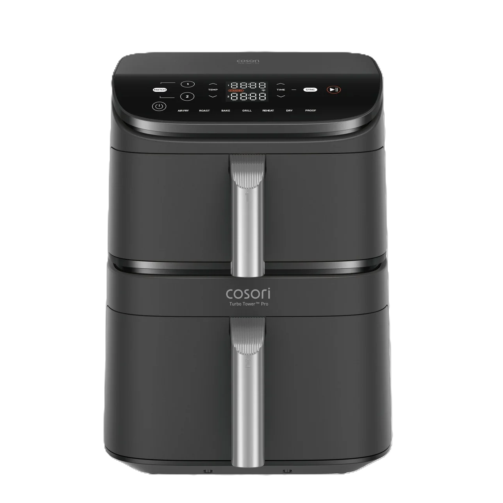

Rezepte
Lieblingsgerichte aus dem Air Fryer
Einfache Rezeptideen für den Alltag: schnell vorbereitet, übersichtlich erklärt und passend für die Zubereitung im Cosori Turbo Tower.
Rezepte
Einfache Rezeptideen für den Alltag: schnell vorbereitet, übersichtlich erklärt und passend für die Zubereitung im Cosori Turbo Tower.

Rezeptideen
Die Rezeptideen sind bewusst unkompliziert gehalten und eignen sich gut für die schnelle Zubereitung im Air Fryer.
Hauptgericht
Ein schnelles Hauptgericht mit wenig Öl und kurzer Garzeit.
Hauptgericht
Praktisch für größere Portionen und passend für zwei Garzonen.
Hauptgericht
Zucchini, Paprika und Kartoffeln als einfache Beilage oder Mahlzeit.
Snack
Klassische Pommes mit knusprigem Ergebnis und wenig zusätzlichem Öl.
Snack
Ein schneller Snack mit knuspriger Panade für zwischendurch.
Snack
Eine vielseitige Beilage zu Fleisch, Fisch oder Gemüse.
Dessert
Ein einfaches Dessert mit Apfel, Zimt und kurzer Backzeit.
Dessert
Kleines Dessert für den Air Fryer mit kurzer Zubereitungszeit.